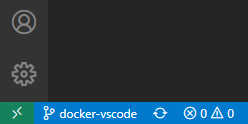
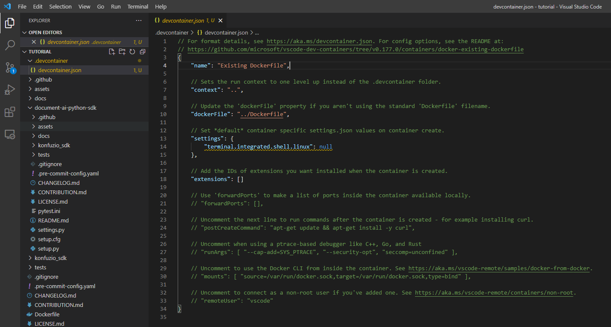
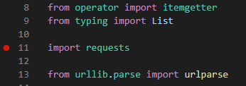

Contribution Guide¶
First, please contact us via our contact form. Some tests are data dependent. Please request access to this data. The access is free of charge and without any obligation.
If you would like to contribute, please use the development installation and open a PR with your contributions.
clone the project in your working directory
git clone https://github.com/konfuzio-ai/document-ai-python-sdk.gitgo inside the project folder
cd document-ai-python-sdkInstall a project in editable mode (i.e. setuptools “develop mode”) from the current project path.
pip install -e .[dev]initialize the connection to create an
.envfile that stores your credentials to later connect to the host of the Konfuzio Serverkonfuzio_sdk initcreate a branch to work that allows you to create a pull request later on
git checkout -b new_branchuse pre-commit
pre-commit installAutomatic inspections will run in your commits ensuring they match the code formatting of the repository.
Make sure your upstream repo is the original konfuzio-sdk repo:
https://github.com/konfuzio-ai/document-ai-python-sdk.gitotherwise add it
git remote add upstream https://github.com/konfuzio-ai/document-ai-python-sdk.git
Now you can start to make changes.
commit your changes
git commit -m "message"push your changes to your remote branch
git push
Once you push the changes to your repo, the Compare & pull request button will appear in GitHub.
Tests will automatically run for every commit you push to the GitHub project.
You can also run them locally by executing pytest in your terminal from the root of this project.
The files/folders listed below are ignored when you push your changes to the repository.
.env file
.settings.py file
data folder
konfuzio_sdk.egg-info folder
IDE settings files
docs/build/ folder
*.pyc files
Note: If you choose another name for the folder where you want to store the data being downloaded, please add the folder to .gitignore.
Architecture SDK to Server¶
The following chart is automatically created by the version of the diagram on the branch master, see source.
If you hover over the image you can zoom or use the full page mode.
If you want to edit the diagramm, please refer to the GitHub Drawio Documentation.
Directory Structure¶
├── konfuzio-sdk <- SDK project name
│ │
│ ├── docs <- Documentation to use konfuzio_sdk package in a project
│ │
│ ├── konfuzio_sdk <- Source code of Konfuzio SDK
│ │ ├── __init__.py <- Makes konfuzio_sdk a Python module
│ │ ├── api.py <- Functions to interact with the Konfuzio Server
│ │ ├── cli.py <- Command Line interface to the konfuzio_sdk package
│ │ ├── data.py <- Functions to handle data from the API
│ │ ├── settings_importer.py <- Meta settings loaded from the project
│ │ ├── urls.py <- Endpoints of the Konfuzio host
│ │ └── utils.py <- Utils functions for the konfuzio_sdk package
│ │
│ ├── tests <- Pytests: basic tests to test scripts based on a demo project
│ │
│ ├── .gitignore <- Specify files untracked and ignored by git
│ ├── README.md <- Readme to get to know konfuzio_sdk package
│ ├── pytest.ini <- Configurations for pytests
│ ├── settings.py <- Settings of SDK project
│ ├── setup.cfg <- Setup configurations
│ ├── setup.py <- Installation requirements
Running tests locally¶
Some tests do not require access to the Konfuzio Server. Those are marked as “local”.
To run all tests, do:
pytest
To run only local tests, do:
pytest -m 'local'
To run tests from a specific file, do:
pytest tests/<name_of_the_file>.py
How to release with GitHub to PyPI¶
Change the version number in the file VERSION use the format
v.X.X.Xwithout whitespaces.
Draft a Release here.

Create a new Tag on master, named as the version number in step 1.
Add a title for the release
Automatically generate the description using the Names of the merged Pull Requests
After you press publish release, a new Python Package will be uploaded to PyPI by a GitHub Action, see code here. You can verify that the Release was uploaded via having a look on PyPI


How to use nightly builds?¶

Install the latest pre-release
pip install --pre konfuzio_sdkForce to pick the latest pre-release the version
pip install konfuzio_sdk>=0.2.3.dev0. As PEP440 states: The developmental release segment consists of the string .dev, followed by a non-negative integer value.
Developmental releases are ordered by their numerical component, immediately before the corresponding release (and before any pre-releases with the same release segment), and following any previous release (including any
post-releases)
Note
Pre-Releases don’t use tags but reference commits. The version number of a pre-release relates to the Year-Month-Date-Hour-Minute-Second of last commit date on branch master used to create this release. This process allows publish a new package if there are new commits on the master branch.

Internal release process¶
Every day at 5:19 AM UTC (3:19 AM UTC+2, see code here) a new nightly release of the SDK (master branch) is released to https://pypi.org/project/konfuzio-sdk/#history.
Every day at 6:13 AM UTC a new nightly release of the Server using the latest nightly SDK is deployed at https://nightly-sdk.branch.konfuzio.com/ as a Gitlab schedule from our server repository.
We get an early chance to find bugs with our integration of the SDK with the Konfuzio Server before the official release. During our internal development sprints (2 week periods) we follow the strategy summarized in the table below.
Key |
Meaning |
|---|---|
T |
Testing Time |
M |
Merge to next level |
R |
Release |
B |
Bug Fixing |
Release |
1 |
2 |
3 |
4 |
5 |
6 |
7 |
8 |
9 |
10 |
|
|---|---|---|---|---|---|---|---|---|---|---|---|
Server |
master Branch Server |
M |
|||||||||
Server |
testing Branch Server |
T |
B |
B |
R |
||||||
Server |
nightly Build SDK |
T |
B |
B |
R |
||||||
SDK |
master Branch |
T |
T |
B |
B |
R |
|||||
SDK |
Pull Request |
M |
|||||||||
DVUI |
master Branch |
T |
T |
B |
B |
R |
|||||
DVUI |
Pull Request |
M |
– |
The strategy follows a 2 weeks sprint schedule (10 work days). The SDK process is described in the following plan. The process with DVUI is completely analogous:
On the first week we do development on the SDK / Server / DVUI side, and we open one pull request for each new SDK feature on Github (see the list of currently open SDK pull requests here).
On the Monday of the second week we merge pull requests to master, which triggers the creation of a SDK nightly release. This becomes available as a Konfuzio Server deployment the next day at https://nightly-sdk.branch.konfuzio.com/, as a consequence of a Konfuzio Server Gitlab schedule.
We internally test the Konfuzio SDK/Server integration with the nightly deployment and collect any bugs that come up, either from the SDK side or the Server side. For the SDK side, these are scheduled as internal tickets for fixing until Friday, which marks the end of the sprint.
On Friday the bug fixing is over, the associated pull requests are merged to master and a new SDK official release is created containing the new features and bugfixes.
SDK Release Notes are automatically generated from our pull requests using the Github’s feature. Each pull request includes links to relevant documentation about how to use the new feature, see for example https://github.com/konfuzio-ai/konfuzio-sdk/pull/124.
The new SDK features are available on Friday evening at the end of each sprint. As we internally test and integrated the Konfuzio Server with each nightly SDK release, a new Server release is also available at app.konfuzio.com on the same Friday evening. See the changelog for full information about each Konfuzio Server release.
Running tests in Docker¶
If you have problems with the dependencies, a solution could be to use a docker to run the code. Check here the steps for how to run/debug Python code inside a Docker container.
General Motivation for using the VS Code Remote Development Extension¶
When it comes to running your code consistently and reliably, container solutions like Docker can play to their strengths. Even if you are not using Docker for deployment, as soon as you collaborate with other developers testing pipelines have to be in place to ensure that a new merge does not accidentally break the whole project. Collaborating can also mean very different operating systems and configurations that lead to varying behaviors on different machines. This issue is also commonly resolved using Docker. But this of course means that there can be differences between your local machine and the Docker container when it comes to dependencies, which leads to tedious dependency management and prolonged feedback loops (especially on Windows) as you have to wait to see if the code you build really runs as expected in the Docker container. The best solution would be if you could combine the development tools of a Python IDE with the consistent test and execution results of a Docker container. Running a docker container on a local machine is quite easy. Though setting up your container for debugging is not always straightforward. Luckily Microsoft’s Visual Studio Code Remote Development Extension offers a functional and easy to use solution.
1. Download and Install VS Code on your machine¶
Either use this link to download the VS Code or, if you are on Linux and have snap installed, just run (for this tutorial v1.56.2 was used):
sudo
snap
install - -classic
code
If you have not already installed Docker, download and install it here.
2. Pull/Create your project that includes the relevant Docker file¶
In most cases you are going to be using git, so just set up a new git-repository via the terminal, VS Code’s built-in console or VS Code’s git extension. This project should, of course, include the Docker file that is used for deployment and which behavior you want to mimic locally.
If you just want to try out how this all works, you can clone our SDK from its GitHub page and add a Dockerfile with the following content:
# simple docker file
FROM python:3.8-slim
ADD setup.py /code/setup.py
ADD konfuzio_sdk /code/konfuzio_sdk
ADD README.md /code/README.md
WORKDIR /code/
RUN python3.8 -m venv /opt/venv
ENV PATH="/opt/venv/bin:$PATH" VIRTUAL_ENV="/opt/venv"
RUN pip install -e .
RUN pip install pytest
3. Install the remote development extension¶
In VS Code open the extensions tab (its icon is located in the left sidebar) and search Remote - Containers (or for its ID: ms-vscode-remote.remote-containers). Install the extension.

4. Set up your remote development environment¶
You should now be able to find the remote extension’s symbol (arrows on a green background) in the bottom left corner of the VS Code window (picture below). Clicking on the symbol opens the extension’s command pallet, which from now on is going to be our main access point to the extension.
{kind=link}
In the Command Pallet (‘View’ > ‘Command Pallet’) select ‘Remote-Containers: Add Development Container Configuration Files’ > ‘From $your_dockerfile’

Now you should see in the file explorer under .devcontainer your devcontainer.json file. Open it. These are the basic configurations of your devcontainer. Most of this can be left unchanged. Maybe give your container a name by changing the ‘name’ variable. Additionally, you should specify all the ports you need inside your Docker container in ‘forwardPorts’. If you are working with the sample project you do not need to specify any ports.
{kind=link}
5. Build and run your Docker container¶
Open the extension’s command pallet by clicking on the arrows in the bottom left and search for ‘Reopen Folder in Container’. If you are doing this the first time, this builds the Docker container and thus can take quite a bit of time.
To confirm that you are now inside the container look again to the bottom left. You should now be able to see ‘Dev Container: $your_name’ next to the two arrows.

6. Install the Python extension inside the Docker container to debug and run Python files¶
Again open up the extensions tab (now inside the Docker container) and install the Python extension (ID: * ms-python.python*).
Now you can debug/run any Python file you want. Open up the chosen Python file and the ‘Run and Debug’ tab by clicking the run/debug icon that should be now available on the left taskbar.
Click ‘Run and Debug’ > ‘Python File’ and you are good to go. Before make sure to set the needed breakpoints by clicking to the left of the line numbers.
{kind=link}
If you want to evaluate certain expressions while debugging, open up the terminal (if it is not open already) by clicking ‘View’ > ‘Terminal’. One of the terminal’s tabs is the debug console, where you can evaluate any expression.
If you are in the sample project you can make sure that the Docker container works as expected by entering the tests folder (‘cd tests’) and executing:
pytest - m
local

Additional Tips¶
If you want to switch back to your local machine (to e.g. switch branch), open the extension’s command pallet by clicking on the arrows and select ‘Reopen Folder Locally’.
If you want to rebuild the container, because e.g. a different branch uses different dependencies, open the extension’s command palette and click ‘Rebuild Container’. (This of course means that you have to reinstall the Python extension - if this becomes annoying you can specify its ID in the devcontainer.json file to be pre-installed with every rebuild).